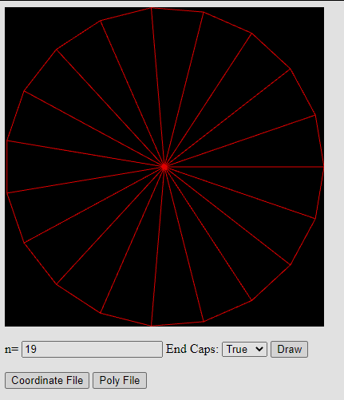
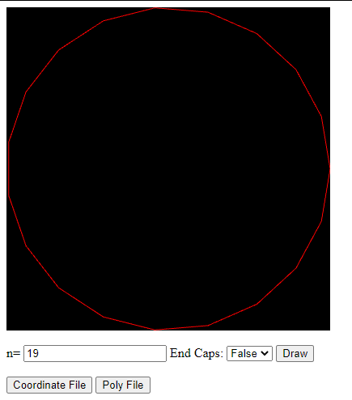

Cooper Faber, cwfaber, 4/13/20
Project 1: Simple Wireframe Model
This program draws an n-sided 3D cylinder with the amount of sides based on user input. To use, enter the amount of desired sides on the cylinder, and whether to draw endcaps. Coor/Poly files can be downloaded with the respective buttons.
Project 1
Javascript Source

